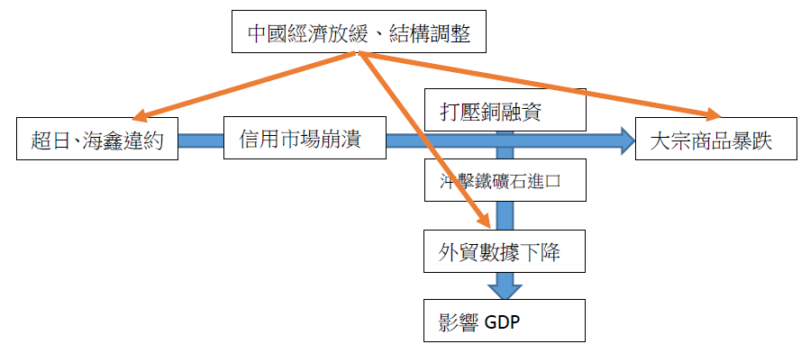

内幕交易是否应该合法化一直是学界或者业界争论的焦点，争论的焦点在于：
上述问题的探讨又将涉及监管者存在的必要性的讨论，以及监管者在市场中应该扮演的角色。
2013年12月13日，证监会正式下发《证券发行与承销管理办法》，与此同时中登公司与上交所、深交所联合发布新股申购细则，这标志着新一轮的新股发行改革进入了实质操作阶段。
新办法有诸多积极的意义，最值得肯定的是证监会将发挥更强的监督作用而非审批作用，对于违法违规的处罚力度大幅加强，此举确保了信息的真实性，有利于资本市场的长期健康发展。
遗憾的是这一本应以保护中小股民为核心的制度设计，实则将利益的天平再次向机构参与者倾斜，特别是以下四个方面的问题，是否真正保护了中小股民的利益，值得商榷：
在中国资本市场仍处于转型期，由为国有企业转型的历史使命转向为全社会实体经济服务的关键阶段，特别是以中小板创业板为代表的小微企业股权融资尚处起步阶段之时，笔者认为过早地放开价格管制实行市场化将会造成许多不良后果。
笔者怀念曾经的窗口指导制度，低廉的新股价格不仅通过逆向选择使许多真正需要融资的企业得以上市，资本市场参与者更是获得了高额的投资回报。通过跟踪窗口指导和市场化定价发行之新股的股价和业绩表现，不难发现一条清晰的分界线，市场化改革之前上市的公司整体质量远高于改革之后上市的公司，不仅在上市首日更是在随后数年的表现都远超市场，以华兰生物、苏宁电器等为代表的一大批成功、优质的企业在成功上市融资后发生了质变，不仅在开盘首日，更是在随后数年为投资者带来了源源不断的回报。
然而在新股发行价格管制放开后，随之而来的便是让人魂牵梦绕的新股发行“三高现象”（高股价、高市盈率、高超募倍数），很多媒体将这一现象归罪于新股定价市场化之不完全，导致利益集团操控发行价格所致，其中一部分是对的，新股发行的超前市场化滋生了一个庞大的利益集团，养肥了投行、养肥了参与发行定价的机构、更是养肥了那些伪创业者！不过，这一解释并没有抓住问题的本质。是问，如果发行价格真的被人为太高，为什么还有这么多的超额申购？若完全放开市场化，让往上申购的中小股民也完全参与到定价中来，三高现象真的能缓解吗？笔者认为真实原因是需求与供给短期不平衡导致。具体而言便是在当下资本市场转型期，供给在这一特殊阶段跟不上需求，所以造成了价格在长期意义上的错误确定。
笔者认为政府的角色应当是进行着眼于长期均衡状况的短期调整。例如对于新能源行业的价格补贴便是调整了短期需求跟不上供给的状况。新股发行，特别是小板股票的发行亦是如此，未来一段时间实行适当的价格管制使市场在短期仍能达到长期均衡，待供给基本更上需求后再交给市场这一无形之手进行调节。
笔者建议：恢复行政限价手段，通过实行严格的窗口指导制度解决三高问题，不仅能够让利中小股民，同时也能让更多真正需要资金的企业进行融资，待供给与需求逐步达到均衡时，再逐步放开价格管制。
在前些年的新股发行过程中，由供给需求不平衡导致的即使“三高”现象普遍，新股中签率仍然低得可怜，究其原因是太多的大机构套利者分摊了新股发行的红利。除此之外机构投资者打着成熟投资者的旗号竟还能够享受网下配售的待遇，以获得更高的中签率。如今证监会再将中小投资者网上申购的份额夺走划拨给机构投资者，这怎能说是在维护中小股民的利益呢？
证监会的原意是希望让更多的机构投资者参与网下发行定价环节，以防少数人操控发行价格的现象发生，这一抢不幸再一次打偏，究其原因仍是将三高现象归结与不完全的市场化，而非过早地市场化所致。如果供给需求不均衡的现象仍然存在，即使完全市场化，全员参与定价，最终依然不能解决问题。
笔者建议：大幅降低网下配售比例或者取消网下配售缓解，所有投资者在同一个平台公平认购股份，不允许处社保基金以外的机构投资者，特别是以债券基金、货币式集合理财产品为代表的套利资金参与申购，使中小股民充分享受到新股发行的红利。
盘中成交价较当日开盘价首次上涨或下跌达到或超过10%的，临时停牌时间为1小时
盘中成交价较当日开盘价首次上涨或下跌达到或超过20%的，临时停牌至14︰57
可以说，限制的严格程度史无前例。根据笔者的观察和在大一暑假实习期间与诸多营业部老师们和股民朋友们的交流发现，越是严格的价格管制最终往往造成越是严重的投机炒作。例如涨跌停板、T+1等岂在抑制投机的制度反而降低了庄家坐庄的难度，加剧市场波动。（题外话：更为严重的是，股指期货、融资融券的高门坎导致了机构T+0，散户T+1的不公平竞争局面，怎么能说管制制度保护了中小散户？）有兴趣的朋友可以看一下002658、002659、300293-300299几只股票的首日走势，当时深交所实行了首日换手率超50%就停牌的策略严格程度空前，最终的效果可想而知。
造成这一现象的本质依然是供给需求的不同步，于是就有媒体想当然地说，为了增加供给是不是让限售股第一天就解禁呢？愚蠢程度实在是让人懒得抨击。
笔者建议：基于监管者的监管范围是信息流通而非市场行为的理念，放开首日价格管制，实行T+0交易制度并且公开当日大额买卖股票的账户信息反而能够缓解新股投机炒作的现象。
这一制度的本意是希望降低由新股发行导致供给增加造成的存量股票价格下跌。然而在仔细阅读了上交所、深交所发布的申购细则后，笔者大失所望。这一所谓的市值配售制度不过是以原来的资金申购制度为模板穿了个马甲罢了，不仅需要足够市值获得申购权，还需要对所有认购缴纳全额资金，笔者根据2009年IPO重启以来的新股发行价格和节奏测算，大约需要15%的股票市值和85%的可用资金才能比较好的利用资金，而且这是建立在发行节奏保持稳定发行价格较为接近的基础之上，否则还需要不断地调整股票市值和申购资金的比例，这给中小股民在仓位计算和调整上带来了很大的麻烦，而且极易产生高昂的手续费最终得不偿失。对于机构而言申购新股则是轻而易举，特别是对于持有一定长线仓位的基金而言，所持市值能够保证其拥有足够的申购额度，只需另1%的资金便能顺利打满申购上限，根本不需要动态调整仓位。因此市值配售制度再次将新倒向了机构这一边。况且市值配售制度虽然赶出了大量货币式及债券型基金，却引来了大量股票型基金的参与，最终中签率也并不一定能够大幅提高。
笔者认为任何参与市场的投资者都有申购新股的权利，证监会的这一限制有失公平，而且在笔者前一篇文章中也提到，此举并不能够起到稳定市场的效果，反而给申购者带来诸多不变。
笔者建议：政策重点应集中在如何将由现阶段由于供给需求不均衡所带来的「新股红利」更多地分配给中小股民，而不是投行、机构以及伪创业者上！
新股发行改革依然路漫漫，笔者欣赏证监会此次改革的决心，但也恳请证监会在基于保护在二十年来为国企改革、为资本市场发展做出伟大贡献的无数中小股民们利益为核心的理念，能不能稍稍放缓新股发行改革，特别是市场化脚步呢？
最近两家民营企业超日太阳和海鑫钢铁的违约事件备受瞩目，并引发期铜急挫、铁矿石暴跌、信用市场恐慌和人民币贬值等一系列连锁反应，今后甚至将打击备受铜融资与铁矿石进口支撑的外贸，作为三驾马车之一直接影响到中国GDP数据。
不过笔者认为市场短期内的反应确有过度之嫌，本次违约事件，包括之前的房价局部崩盘、人民币大幅贬值，理解为政府有意放出反转信号、扭转市场的单边预期更为合适，这样一来让市场避险情绪集中释放，进行压力测试，二来给市场持单边预期的投资者亮出黄牌，显示出政府控制增量、管理存量、风险可控的治理思路。
所以对于一些媒体：房价一下跌就说楼市崩盘、人民币一回调就说升值结束、债券市场一违约就扔个数字说中国千万亿违约风险等的羊群行为，大家还是当作茶余饭后的冷笑话吧，更多的是理解政府的信号，对长期可能发生的反转做好充足的准备就行。2007年530事件也是政府给投机亮的一张黄牌，媒体大报股市熊市论，结果不还从3400涨到6100了，短期跟随市场情绪止损操作的人士上当了，但如果没有理解政府的信号，不改变长期预期，一意孤行地认为股市将长期上涨的话，结果可想而知。
其实从更宏观的角度说，政府更希望的是市场能够意识到这一系列连锁事件的共同原因：中国经济放缓、结构调整（红箭头部分），而不要太在意两个连锁反应（蓝箭头部分）。这表明中国政府对于改变经济增长模式的决心。近年来政府通过释放一系列信号，希望以此改变各界对于中国投资驱动经济模式的单边预期，并及早为经济结构调整做好准备。

附：超日、海鑫违约事件：扭转信用市场不违约的单边预期，治理思路：控制信用市场垃圾债的增量，管理不良资产存量，让信贷违约风险可控；人民币大幅贬值：扭转人民币升值预期，控制游资增量，管理外汇存量，让游资流出风险可控；楼市下跌：扭转房价单边上升预期，控制房地产投资增量，管理相关信贷业务存量，让房地产市场软着陆。
从上面的讨论可以看出，监管者所要做的，就是保证信息的透明，杜绝信息垄断、内幕交易的产生，这是维护市场的必要的监管措施。
对于市场行为，即信息的处理方面，监管者不应过分涉足，因为市场上有更聪明的投资者去正确地处理它，监管者只需要维护一个正常的市场秩序-信息透明，足矣。